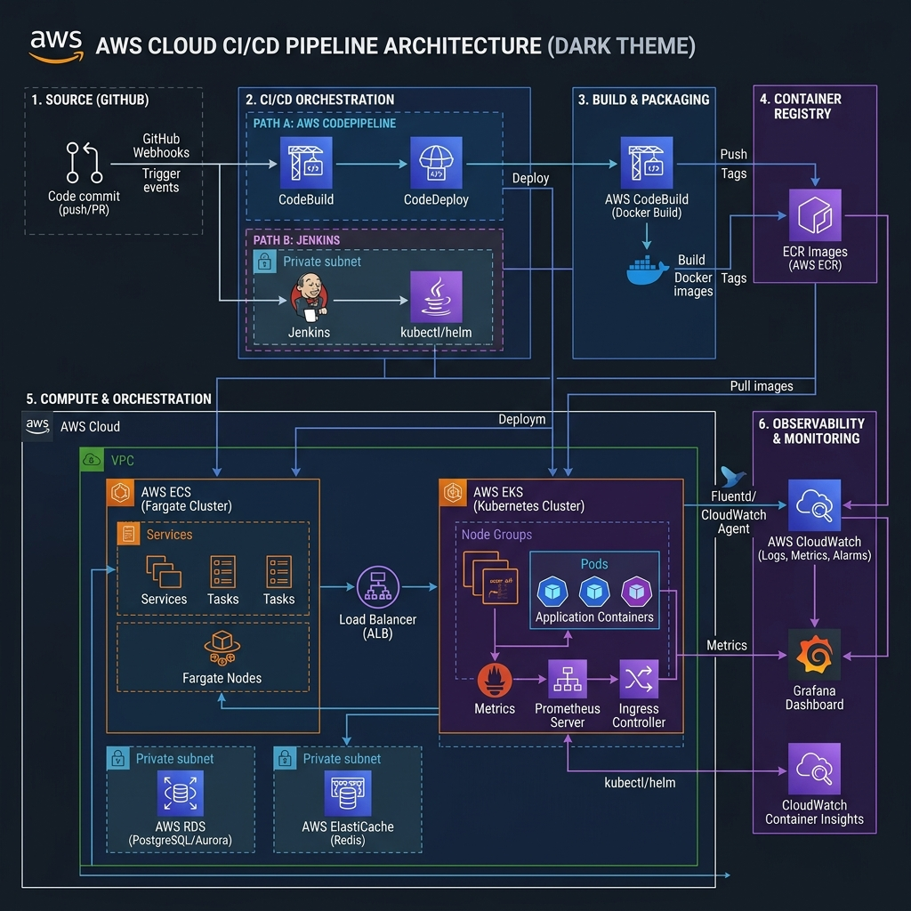

Production CI/CD Pipeline
Architected a GitOps-driven pipeline (GitHub Actions + ArgoCD) for 6 containerized microservices. Implemented Blue/Green zero-downtime releases, dropping deployment times from 3 hours to under 8 minutes.
View Details